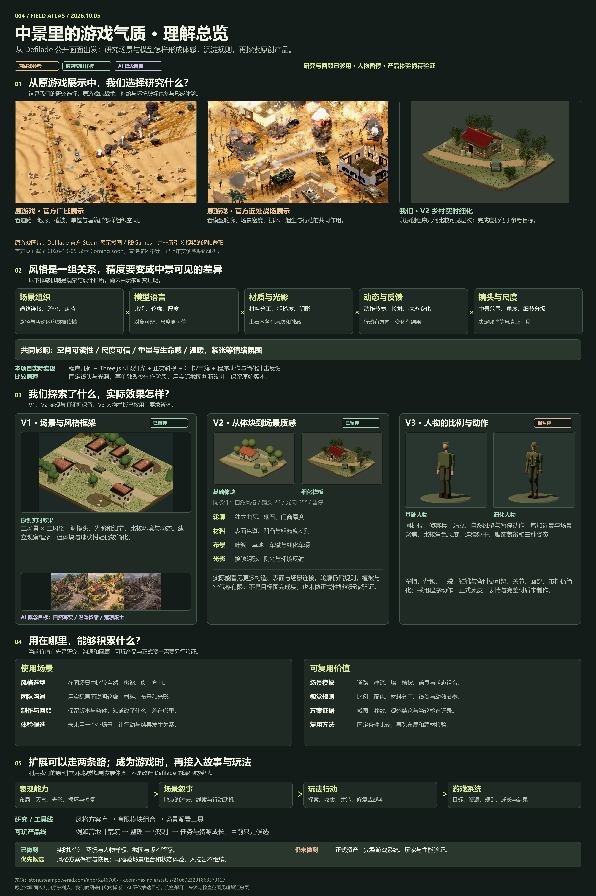

RESEARCH SYNTHESIS / 理解与价值汇总
从画面体感，走向可复用的风格。
把我们探索了什么、实际效果怎样、为什么有效，以及还能怎样扩展，放在同一张图和一份完整记录里。
核心理解
场景、模型、光影和动态，共同形成玩家体感。
正在加载完整研究记录…



完整记录暂时无法加载。仍可打开上方总览图，或返回项目工作台。
01
WHAT WE EXPLORED
我们探索了什么
02
REFERENCE / EXPERIMENT / TARGET
看得到的效果与证据
先看图，再判断。原作提供参考，程序渲染展示我们的实际完成度，AI 图用于表达美术方向。
03
WHY THE FEEL CHANGES
体感差异从哪里来
04
STYLE DIRECTIONS
风格是成套的表现规则
05
V1 → V2 → V3
三轮探索的结果与限制
06
HOW TO COMPARE
怎样判断一次优化是否有效
07
WHERE IT HELPS
可以用在什么地方
08
WHAT WE KEEP
值得持续沉淀的价值
09
FROM VISUALS TO PLAY
从视觉底座扩展到游戏体验
10
CURRENT STATE / NEXT OPTIONS
现在够用到哪里，后续还能做什么
11
SOURCES & PROVENANCE